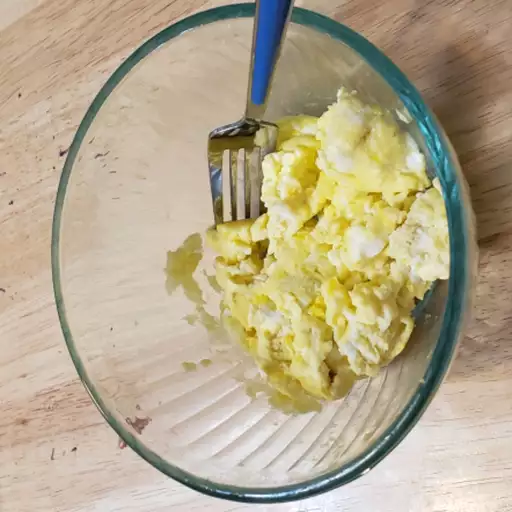

Scrambled Eggs

Description
This recipe is the perfect recipe of you're looking to make savory eggs without having to bring out the pan and turn on the oven.
Taking no longer then 10 minutes from start to finish this is a perfect way to start your morning!
The recipe consist of as low as 5 ingredients but has room for experimenting and adding extra flavor to the dish.
All you need to utensil wise is a microwave and a bowl as well as some tool is you were to dice up some tomatoes or onions.
Ingredients
- 4 Eggs
- 1/4 cup of milk
- 1/8 teaspoon of salt
- Cheese
- Ham or Bacon
- Veggies
- Herbs
Steps
-
Break the eggs into a microwave-proof mixing bowl. Add milk and salt; mix well.
-
Pop the bowl into the microwave and cook on high power for 30 seconds.
Remove bowl, beat eggs very well, scraping down the sides of the bowl, and return to the microwave for another 30 seconds.
Repeat this pattern, stirring every 30 seconds for up to 2 1/2 minutes.
Stop when eggs have the consistency you desire.
Go to Home Page